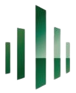
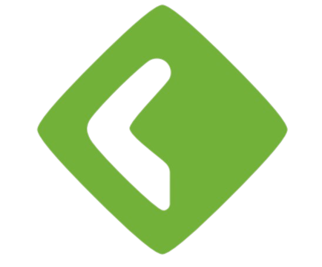
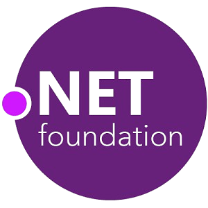

GSB
Préparation et gestion des équipements informatiques, fiches techniques et conseils de sécurisation en tant que chef de projet.
Voir le projet →
HME France
Refonte complète du site vitrine et développement d'un espace administrateur avec carte interactive des partenaires.
Voir le projet →
AXEL
Configuration d'un ERP Axelor, développement Java et traitement de fichiers XML/CSV pour le département.
Voir le projet →GSB Frais
Application de gestion des frais pour les visiteurs médicaux, construite sur une architecture MVC.
Voir le projet →Symfony
Gestion des relations entre laboratoire GSB et vétérinaires, avec suivi commercial et gestion des droits d'accès.
Voir le projet →
GSB Campagnes
Gestion des campagnes de sensibilisation et suivi financier en architecture en couches (GUI, BLL, DAL, BO).
Voir le projet →